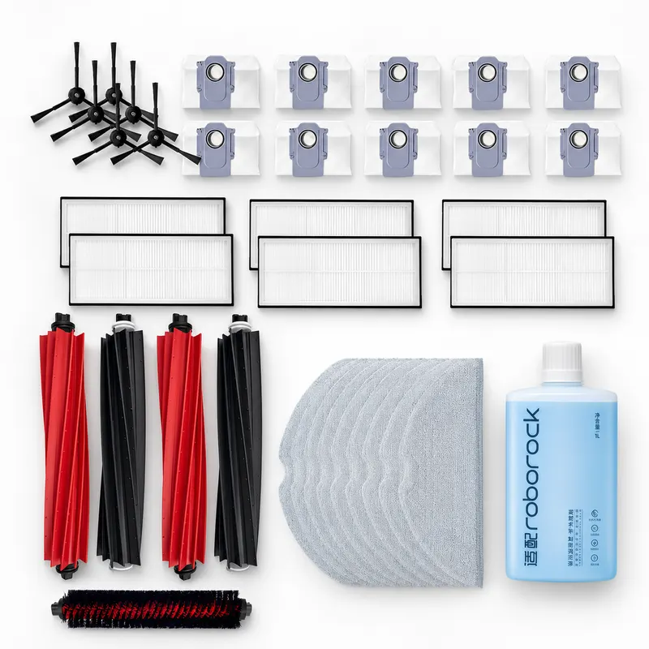

로보락 (Roborock)
로보락 S8 Pro Ultra 밤에 먼지 비우기가 안 될 때, 더스트백부터 바꿔야 할까요?
글·구성: 제이상점 · 기종별 1:1 호환 실물 점검 · 교체 주기 비교표 · 스마트스토어 패키지 안내

핵심 관리 · 선택 체크포인트
- 밤에 청소를 마친 S8 Pro Ultra가 도크로 돌아왔는데 먼지 비우는 소리가 나지 않았다면, 더스트백부터 새로 살 필요는 없어요.
- 밤에만 조용하다면 방해금지 시간부터 봐요: 공식 설명서의 기본 방해금지 시간은 22:00~08:00입니다.
- 예를 들어 낮 청소 뒤에는 비우기가 작동하고 밤 청소 뒤에만 멈춘다면, 우선 두 청소가 끝난 시각과 방해금지 구간을 나란히 보세요.
- 아예 시작하지 않는지, 시작했는데 잘 안 비워지는지: 이 둘을 나누면 살펴볼 곳이 달라집니다.
- 반면 비우는 동작은 시작되는데 흡입이 약하거나 평소와 다른 소리가 난다면 막힘이나 장착 문제도 살펴야 해요.
부품 규격 · 점검 기준표
| 살펴볼 조건 | 먼저 할 일 |
|---|---|
| 앱에서 자동 비우기를 꺼 둔 경우 | 현재 자동 비우기 설정 보기 |
| 방해금지 모드 중 도크로 복귀한 경우 | 설정 시간과 청소 종료 시각 비교 |
| 청소하지 않고 도크로 돌아온 경우 | 이번 복귀 전에 실제 청소를 했는지 구분 |
| 도크 먼지통이 장착되지 않은 경우 | 전원을 끄고 플러그를 뽑은 뒤 장착 상태 점검 |
💡 교체 주기가 겹치는 필터·브러시·물걸레·더스트백은 단품 배송비를 여러 번 내기보다 로보락 S8 Pro Ultra 기간별 세트(3개월·6개월·1년)로 미리 구비해 두면 물세척 후 24시간 교대 건조까지 끊김 없이 관리할 수 있습니다.
자주 묻는 질문 (FAQ)
Q. 로보락S8ProUltra 관리 시 '앱에서 자동 비우기를 꺼 둔 경우'은 어떻게 점검하나요?
A. 현재 자동 비우기 설정 보기
Q. 로보락S8ProUltra 관리 시 '방해금지 모드 중 도크로 복귀한 경우'은 어떻게 점검하나요?
A. 설정 시간과 청소 종료 시각 비교
Q. 로보락S8ProUltra 관리 시 '청소하지 않고 도크로 돌아온 경우'은 어떻게 점검하나요?
A. 이번 복귀 전에 실제 청소를 했는지 구분
제이상점 1:1 검수 추천 패키지 · 구매 안내
☑️ 주문 전 확인해 두면 좋은 제이상점 안심 포인트
· 기종별 1:1 전용 규격 검수: 모델명·연식에 맞는 호환·정품 구성을 검수해 오주문 불안을 줄였습니다.
· 해외직배송 미리 주문 팁: 중국 구매대행·해외직배송 상품이므로 마지막 여분 1개를 꺼내 쓰는 시점에 개인통관고유부호와 함께 여유 있게 주문해 두시면 훨씬 경제적인 비용으로 끊김 없이 교체하실 수 있습니다.
· 기종별 1:1 전용 규격 검수: 모델명·연식에 맞는 호환·정품 구성을 검수해 오주문 불안을 줄였습니다.
· 해외직배송 미리 주문 팁: 중국 구매대행·해외직배송 상품이므로 마지막 여분 1개를 꺼내 쓰는 시점에 개인통관고유부호와 함께 여유 있게 주문해 두시면 훨씬 경제적인 비용으로 끊김 없이 교체하실 수 있습니다.
📖 더 많은 가정 내 사용 스토리와 상세 후기가 궁금하시다면
📱 네이버 블로그 모바일 원문 보기 ↗